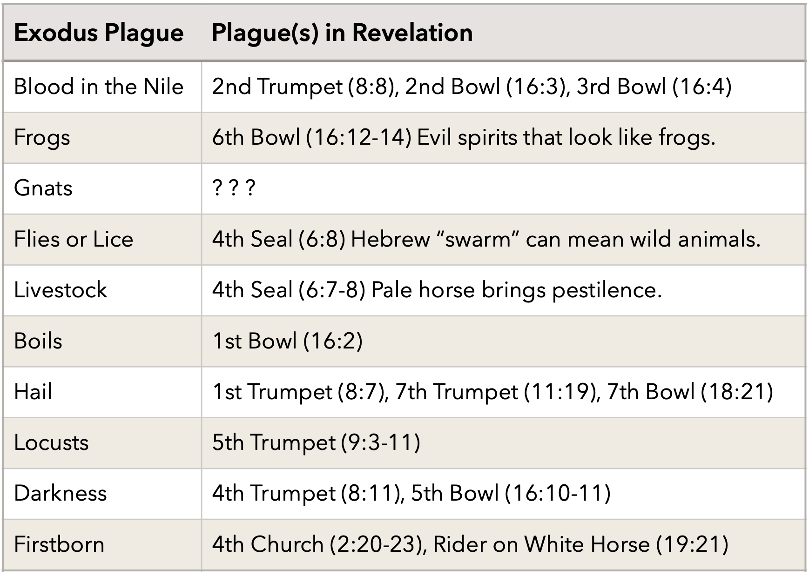

Voice of the Seven Thunders
This article originally appeared as the chapter "Aftertaste: Donner & Blitzen" in Peace, like Solomon Never Knew. It tackles the riddle of the Voice of the Seven Thunders, one of the greatest mysteries in the Bible.
Since this was the next to last chapter in that book, it draws frequently on ideas developed earlier in the book.
Aftertaste: Donner & Blitzen
On Dasher, on Dancer, on Prancer and Vixen, on Comet, on Cupid, on Donner and Blitzen… Singing Christmas Carols as a child was a joyful time. My favorite of Santa’s reindeer was Donner, because our pet German Shepherd was named Donner. Donner means thunder in German and our shepherd’s bark lived up to its name.
Studying the Bible and history and writing down my discoveries initially brought excitement and peace. Once I started editing the finished manuscript, a feeling of dread grew inside me. So for this book, you will get – not an “afterword” – but an “aftertaste”. In trying to understand my heart, I recalled John’s words:
I took the little scroll from the angel’s hand
and ate it. It tasted as sweet as honey in my mouth,
but when I had eaten it, my stomach turned sour.
- Revelation 10:10
Revelation 10 is the most mysterious chapter in the Bible. I purposely avoided studying it for this book. By searching for that passage on the sweet and sour natures of God’s Word, I unwittingly read the whole chapter. A week later, for no reason I can recall, I started looking up Bible passages talking about thunder and lightning. Now avoiding the mystery is a lost cause.
Then I saw another mighty angel coming down from heaven. He was
robed in a cloud, with a rainbow above his head; his face was like the
sun, and his legs were like fiery pillars. He was holding a little scroll,
which lay open in his hand. He planted his right foot on the sea and
his left foot on the land, and he gave a loud shout like the roar of a
lion. When he shouted, the voices of the seven thunders spoke.
And when the seven thunders spoke, I was about to write; but I
heard a voice from heaven say, “Seal up what the seven thunders
have said and do not write it down.”
- Revelation 10:1-4, NIV
Halfway through writing the last book of the Bible, a powerful angel delivers a loud message to the last Apostle. Before he can write it down, Heaven’s editorial department tells him to leave it out. The message is sealed, just like the first scroll in Revelation 5, only no worthy lamb comes to open this one.
The mystery of the seven thunders captivated me when I began writing. My hero was zapped by heaven’s lightning and charged with knowledge his conscious mind could not fathom. Then in times of danger, thunder erupted from his mouth and thwarted the villain’s designs. My plot device may have been as corny as the Green Lantern movie, but it sat at the center of my story and played a vital role in the climactic scene of the last book in the trilogy.
My decade long passion for that passage is part of what made me stay away from analyzing it for this book. I am not objective and considered my imagination likely to invent a meaning for it out of whole cloth. I tried to read a few internet articles about the seven thunders, but the interpretations I saw were fabulous – and not in a good way.
From Job, Ecclesiastes, 1 Timothy and elsewhere we saw that God hides important messages behind emotionally charged passages. Only the humble, prayerful and determined can pierce the mysteries surrounding them. Solomon said everything’s meaningless, so his book is laden with meaning, and that the future is unknowable, while laying God’s plan for all future generations. Job said he couldn’t see or hear God at the same time he was delivering prophecies of the Christ. So what about John? Did the last Apostle seal the message from the angel straddling land and sea by writing nothing, or by writing riddles?
Is it all a big joke where the punchline is, “Made you look!” ?
Is it all a big joke
where the punchline is
“Made you look!” ?
John’s reference to honey is an evocative warning. Solomon primed us to be wary.
If you find honey, eat just enough—
too much of it, and you will vomit.
- Proverbs 25:16
It is not good to eat too much honey,
nor is it honorable to search out
matters that are too deep.
- Proverbs 25:27
Or recall Zophar’s warning to the arrogant man, shown to be a prophecy of Alexander the Great:
He will not enjoy the streams,
the rivers flowing with honey and cream.
- Job 20:17
Alexander was buried in a sarcophagus filled with honey. I want to bury my ideas with him, but the closer I look, the more complete a picture emerges. John did seal up the words of the seven thunders, but their report echoes throughout God’s Word. Here, then, are the ripples spreading out from the legs of the angel straddling the shore of our turbulent sea.
In search of thunder
The tools to find the thunder are three: a Bible concordance, a history text and God’s timeline. Use one without the others and the message won’t show up. Use the first two without the clocks painstakingly derived in this book and you will only get half the message – the part that remains in the future. You will miss the part that has recently been fulfilled, the proof that God will certainly keep His word.
Thunder, thundercloud, thundered, thundering, thunders and thunderstorm collectively appear in about thirteen Bible books. (It varies by translation.) When not referring to horses’ hooves or human armies, it speaks of God’s voice or the outworking of His power. The flood, the parting of the Red Sea, or generic promises of God’s judgment are sometimes in view. Thunder is most commonly meant to provoke the fear of the Lord or show forth God’s glory. A more focused reference appear in Jeremiah:
“‘The LORD will roar from on high;
he will thunder from his holy dwelling
and roar mightily against his land.
He will shout like those who tread the grapes,
shout against all who live on the earth.
The tumult will resound to the ends of the earth,
for the LORD will bring charges against the nations;
he will bring judgment on all mankind
and put the wicked to the sword,’ ”
declares the LORD.
This is what the LORD Almighty says:
“Look! Disaster is spreading
from nation to nation;
a mighty storm is rising
from the ends of the earth.”
- Jeremiah 25:30-32
In this chapter, God’s sword is drawn and named three times, including verse 31 above. This connects the seven swords to the seven thunders. The cup of God’s wrath dominates the chapter, another connection to Revelation. From previous analysis, recall that this passage was partially fulfilled during the General Crisis of the 17th century, when war spread to the ends of the earth. It will be completely fulfilled during the final war near the time of Christ’s return.
Though the word thunder appears but once, synonyms like roar and shout bring the count to seven angry denunciations in verses 30 and 31. That is a tenuous basis on which to hang an association. Call it a resounding echo. It does connect to what we are looking for, but we need to move on to another prophet for clarity.
Thunder and its cognates appear most often in four books:
- Revelation
- Job
- Exodus
- Psalms
Seeing that the word was scattered about five unrelated Psalms and showed up five times in the narrative of a single plague (of hail) in Exodus, it was easy to eliminate those two books from the running.
Easy and wrong! Once I had enough material for a whole chapter, I made one last pass through the concordance to be safe and discovered I had overlooked important things. First, I overlooked two psalms in my search, making seven thunder psalms, not five. Second, even if we don’t know what the seven thunders say, we can take comfort in what they do.
Psalms of Thunder: 18, 29, 68, 77, 81, 93 & 104
Psalm 18 is a masterpiece. Quoting but a few lines is a travesty. Here goes.
The cords of death entangled me;
the torrents of destruction overwhelmed me.
The cords of the grave coiled around me;
the snares of death confronted me.
In my distress I called to the LORD;
I cried to my God for help.
From his temple he heard my voice;
my cry came before him, into his ears.
The earth trembled and quaked,
and the foundations of the mountains shook;
they trembled because he was angry.
Smoke rose from his nostrils;
consuming fire came from his mouth,
burning coals blazed out of it.
He parted the heavens and came down;
dark clouds were under his feet.
He mounted the cherubim and flew;
he soared on the wings of the wind.
- Psalm 18:4-10
This is a psalm about the Second Coming of Christ, when he defeats the grave and overcomes death. Surely the seven thunders spoke something about this blessed event, the timing of which is Heaven’s most closely guarded secret. Details of God’s tactics and weaponry may also be among the secrets that John kept safe:
Out of the brightness of his presence clouds advanced,
with hailstones and bolts of lightning.
The LORD thundered from heaven;
the voice of the Most High resounded.
He shot his arrows and scattered the enemy,
with great bolts of lightning he routed them.
- Psalm 18:12-14
One of Job’s most potent exclamations of hope is this:
My days have passed, my plans are shattered.
Yet the desires of my heart
turn night into day;
in the face of the darkness light is near.
- Job 17:11-12, NIV
Compare that to Psalm 18:
You, LORD, keep my lamp burning;
my God turns my darkness into light.
- Psalm 18:28
This is a vital connection between these seven Psalms and Job. More will follow. There is also a connection to another favorite psalm of mine, the one at the end of Habakkuk 3:
He makes my feet like the feet of a deer;
he causes me to stand on the heights.
- Psalm 18:33, NIV
(I have enough material for an entire book on Habakkuk and the end times, so we shall leave it at that. For lots about Habakkuk, see Habakkuk Part 1, 2, 3, 4, 5, 6, 7 and Habakkuk's War. )
Psalm 29. Moving on, the thundering of God’s voice is one aspect of God’s glory that Psalm 29 extols.
The voice of the LORD is over the waters;
the God of glory thunders,
the LORD thunders over the mighty waters…
The LORD sits enthroned over the flood;
the LORD is enthroned as King forever.
The LORD gives strength to his people;
the LORD blesses his people with peace.
- Psalm 29:3,10-11
In Revelation 10, the angel that spoke with the voice of the seven thunders stood athwart land and sea. This boundary symbolizes God’s wrath in judgment (the flood) and His mercy in decreeing that the earth never again be destroyed by a flood. By touching land and sea, that angel stands in direct opposition to the two dragons that arise soon after in Revelation 13, the beast of the land and the beast of the sea.
“And in his temple, all cry glory!” (Psalm 29:9b)
What is the outcome of God’s glory? Verse 11 tells us plainly. “The LORD blesses his people with peace.” For all my digging into Job and Revelation, this simple fact escaped me. Lots of plagues lie before us, so hold onto that word.
Psalm 68. Coming to this psalm, we hear tidings of a war, but who is that war for?
A father to the fatherless,
a defender of widows,
is God in his holy dwelling.
God sets the lonely in families,
he leads out the prisoners with singing;
but the rebellious live in a sun-scorched land.
- Psalm 68:5-6, NIV
God is not waging war for the wealthy, he is fighting on behalf of the lonely and the prisoner. Equally important is whom he wars against:
Because of your temple at Jerusalem
kings will bring you gifts.
Rebuke the beast among the reeds,
the herd of bulls among the calves of the nations.
Humbled, may the beast bring bars of silver.
Scatter the nations who delight in war…
Sing to God, you kingdoms of the earth,
sing praise to the Lord,
to him who rides across the highest heavens, the ancient heavens,
who thunders with mighty voice.
- Psalm 68:29-30,32-33, NIV
Who is the “beast among the reeds”? As a beast, it represents an evil human kingdom. Here it is shown humbled and yielding tribute. We have seen a beast before that matches this description but in opposition. In Job 40, Behemoth is described as hiding among the reeds beside the river and as receiving tribute from the other animals. Behemoth is the beast from the land, one of the two dragons in Revelation 13. Rejoice! God will compel Behemoth to yield to His thundering rebuke.
Psalm 77. Spotting Behemoth hiding in Psalm 68 where I had not spied him before was a surprise. It prompted me to delve deeper. If Psalm 68 connects us to Job’s Behemoth, Psalm 77 cuts to the heart of Job, in Elihu’s speech:
I remembered my songs in the night.
My heart meditated and my spirit asked:
“Will the Lord reject forever?
Will he never show his favor again?
- Psalm 77:6-7, NIV
My own “songs in the night” sung during years of depression in college formed my bond with the book of Job.
The waters saw you, God,
the waters saw you and writhed;
the very depths were convulsed.
The clouds poured down water,
the heavens resounded with thunder;
your arrows flashed back and forth.
Your thunder was heard in the whirlwind,
your lightning lit up the world;
the earth trembled and quaked.
Your path led through the sea,
your way through the mighty waters,
though your footprints were not seen.
You led your people like a flock
by the hand of Moses and Aaron.
- Psalm 77:16-20
Here we find a reason to believe that since God’s thundering voice parted the Red Sea to set one people free, it will part our sea of troubles to set us free. Are we ignorant of the precise words the seven thunders spoke? For Israel God’s “footprints were not seen”. The words of the seven thunders are the unseen footprints guiding us to a new Promised Land.
Psalm 81 speaks of Israel’s rebellion.
In your distress you called and I rescued you,
I answered you out of a thundercloud;
I tested you at the waters of Meribah.
- Psalm 81:7, NIV
Like several other psalms in this cycle, this one directs our attention to the Exodus and the time when God spoke from the cloud to deliver the Ten Commandments.
Psalm 93 again extols God’s glory.
The seas have lifted up, LORD,
the seas have lifted up their voice;
the seas have lifted up their pounding waves.
Mightier than the thunder of the great waters,
mightier than the breakers of the sea—
the LORD on high is mighty.
- Psalm 93:3-4
Spot a theme? There are two thundering voices in the world: God’s and Satan’s. God’s voice is the lofty thunder of the thunderstorm. Satan’s voice is the clamoring of the peoples, the sea of unsaved humanity. It is to calm and overcome that sea and the monster that disturbs it that the Lord has marshaled His strength.
Psalm 104. Our seventh and final psalm of thunder is Psalm 104. It reads a lot like God’s speech in Job. It describes God’s care for all His creatures, like birds, storks, goats and hyrax. It also takes up the flood as a major theme:
He makes winds his messengers,
flames of fire his servants.
He set the earth on its foundations;
it can never be moved.
You covered it with the watery depths as with a garment;
the waters stood above the mountains.
But at your rebuke the waters fled,
at the sound of your thunder they took to flight;
they flowed over the mountains,
they went down into the valleys,
to the place you assigned for them.
You set a boundary they cannot cross;
never again will they cover the earth.
- Psalm 104:4-9
God has unilaterally disarmed himself, setting aside a potent weapon: universal flood. Despite this, He playfully introduces his final adversary:
How many are your works, LORD!
In wisdom you made them all;
the earth is full of your creatures.
There is the sea, vast and spacious,
teeming with creatures beyond number—
living things both large and small.
There the ships go to and fro,
and Leviathan, which you formed to frolic there.
- Psalm 104:24-26
Leviathan will be the beast from the sea of Revelation 13, that chaotic realm so often sung of in the psalms. To God, it is His frolicking creation, to us, a deadly adversary, a monstrous empire. How will God deliver us from its clutches?
When you hide your face,
they are terrified;
when you take away their breath,
they die and return to the dust.
When you send your Spirit,
they are created,
and you renew the face of the ground.
- Psalm 104:29-30
God will take away its breath, and will send His Spirit to revive us, to resurrect us to new life.
What have these seven psalms told us about the seven thunders? The mysterious voice spoke of our two great foes, Behemoth and Leviathan, about God’s war for our liberation, His plan for our peace, and His gift of eternal life in the Spirit. That is a lot. It is enough to convince us that the message that the angel gave but John “sealed” is every bit as important as we imagine it to be.
Even Moses agrees.
Unity of Psalms, Exodus, Job and Revelation
Before we focus on Moses, let’s look at all four sources holistically. As shown above, the seven thunder psalms contain thematic and symbolic connections to Revelation, Job, and Exodus. They are the glue that holds together the clues we have about what was revealed by the seven thunders. While they provide useful information in and of themselves, they amplify through their endorsement the voices of those three other books. They confirm that a unified message concerning the seven thunders is present in Scripture. Even if we are not able to comprehend all that these books have to say, we can confidently return to them again and again in search of additional insight.
These four books reach the number seven in different ways. The Psalms reference thunder more than seven times, but it is found in exactly seven psalms. Exodus has exactly seven usages – if you rely on the Hebrew or NIV. Job has more than seven, but only seven are about God speaking; others are about nature or the thunder of men at war. Likewise, in Revelation, if you remove the three references to the seven thunders (which announce that something was said without telling what), plus verse 9:9 about the thundering of horses in battle, you again get seven.
Combining the numbers four and seven, you get twenty- eight, the number of Ecclesiastes’ times. This numerical clue is helpful as we dive into Exodus, because Moses knows how to tell time.
Plagues of Thunder
Concerning Exodus, my first reason for rejecting it as being relevant to understanding the seven thunders was that it seemed to use the word thunder eight times, as I was searching the ESV at the time. Looking in the NIV and then the Hebrew Interlinear, I found it only occurs seven times. The place in which translations differ is Exodus 19:19. Some say God spoke “with a voice”, while other say “with a voice like thunder”.
The second reason for rejecting it was that the analysis of the seven swords produced a temporal pattern, where each sword appeared once per millennium. Since five occurrences of thunder in Exodus all concern the plague of hail and the other two concern the giving of the Ten Commandments, it would be impossible to derive a clock from that data. My mistake! I expected the references to thunder to divide time into segments. Instead, something else divides time into segments, and the references to thunder point to one special time. There is a clock: the Ten Plagues on Egypt.
Before we get to that clock, let’s look at the two thunders related to the giving of the Ten Commandments. They say something I never noticed before.
On the morning of the third day there was **thunder** and **lightning**,
with a thick cloud over the mountain, and a **very loud trumpet blast.**
Everyone in the camp trembled. Then Moses led the people out
of the camp to meet with God, and they stood at the foot of the
mountain. Mount Sinai was covered with smoke, because the LORD
descended on it in fire. The smoke billowed up from it like smoke
from a furnace, and the whole mountain trembled violently. As the
**sound of the trumpet** grew louder and louder, Moses spoke and the
voice of God answered him.
- Exodus 19:16-19
That trumpet blast is unusual. This ties Exodus to Revelation 10, where the angel delivered his message in anticipation of the blowing of the seventh and final trumpet. Jesus is set to return at the last trumpet. The law was also given at the blowing of a divine trumpet. We know Jesus is the Word, the embodiment of the law. This tight connection between Exodus and Revelation gives us additional confidence to look closer at Exodus.
The passage from Exodus 19 relates what happened before the law was given. Here is what it says immediately after the commandments were given:
When the people saw the **thunder** and **lightning** and heard the
**trumpet** and saw the mountain in smoke, they trembled with fear.
They stayed at a distance and said to Moses, “Speak to us yourself
and we will listen. But do not have God speak to us or we will die.”
Moses said to the people, “Do not be afraid. God has come to test
you, so that **the fear of God** will be with you to keep you from
sinning.”
- Exodus 20:18-20
This again ties together thunder, the divine trumpet, the law, and the fear of the Lord. Now we are ready to see what the Plagues on Egypt can show us about God’s timetable for judgement. Many previous clocks spanned 7, 28, or 42 periods, so are not fit models for this situation. The best analog is Matthew’s Parable of the Ten Virgins. Adjusting its start year and duration did not produce useful results, so we will copy it unchanged. The Plague clock thus begins in AD 1 and consists of ten periods of 240 years in length, a season according to Solomon. In keeping with the other clocks, the tenth period may be abbreviated by the Father and conclude sixty to a hundred years early.
With the thunder passages centering on two parts of Exodus, the seventh plague and the giving of the Ten Commandments, it is fitting to combine them into a single clock. Details from the first plague and first commandment go with the first era, and subsequent eras match their corresponding plague and command. The story is simple:
God backs up
his principles
with his power.
The quotes below are taken from Exodus 20 (NIV).
- 1st Era: 1–240 AD.
- 1st Plague: Nile turns to blood
- 1st Commandment: No other Gods (20:2-3)
“I am the LORD your God, who brought you out of Egypt, out of
the land of slavery. You shall have no other gods before me.”
The first plague and commandment are the key to when Moses’ clock must begin. The Nile symbolizes the river of life in Revelation and the blood upon the river is the blood of Christ, which sets the captives free from the grave. The command to worship “no other gods” is echoed during this time by Peter, who defies every king and every religion by declaring:
“Salvation is found in no one else,
for there is no other name under
heaven given to mankind by which we must be saved.”
- Acts 4:12
- 2nd Era: 240–480 AD.
- 2nd Plague: Frogs
- 2nd Commandment: No Idols (20:4-6)
“You shall not make for yourself an image in the form of anything in heaven above or on the earth beneath or in the waters below. You shall not bow down to them or worship them; for I, the LORD your God, am a jealous God, punishing the children for the sin of the parents **to the third and** **fourth generation** of those who hate me, but showing love to a thousand generations of those who love me and keep my commandments.”
This second riddle helps us establish the duration of each era in Moses’ clock: three to four generations. We already know that Moses lived for 120 years, so with two streams of information here, from plagues and commandments, a season of 240 years is reasonable. The above quote reinforces that if we consult the Psalms:
Our days may come to seventy years,
or eighty, if our strength endures;
yet the best of them are but trouble and sorrow,
for they quickly pass, and we fly away.
- Psalm 90:10
For a strong person, three generations comes to 240 years. For an average person, three generations comes to 210 years and four generations, to 280 years. By these tokens, we now have internal evidence from within the commandments to establish when to start Moses’ clock and how long to set for each tick.
With the victory of the cross over Rome and its transformation into a Christian empire, God through the church began to destroy the world’s idols. Divine enforcement of the second commandment against idol worship as binding on all humanity had begun.
The plague of frogs is a head scratcher and one of the funniest stories in the Bible. Finding a historical match was so hard that I nearly abandoned this section. Frogs in kneading troughs, and bedrooms and in your servants’ quarters… Frogs everywhere! Unlike the deadly imagery of the locust often used in Scripture, this comical description calls for a less menacing action. Sometime between 300 and 375 AD, a mass migration of northern peoples began and lasted for centuries. Germanic tribes crashed the border and entered the Western Roman Empire. Wars were fought, but it was the influx of foreign cultures, resurgence of pagan ideas, and spread of the Arian heresy that were the greatest threats.
One of the pagan tribes was the Franks. Clovis I was born in 466 AD, near the end of this period. This pagan took the throne from his father in 481 AD. What was emblazoned on his crest of arms? Three frogs! In 496 AD, under the influence of his wife, Clovis converted to Christianity and became a staunch ally of the church. The plague of frogs had ended.
- 3rd Era: 480-720 AD.
- 3rd Plague: Gnats / Lice
- 3rd Commandment: The Lord’s Name (20:7)
“You shall not misuse the name of the LORD your God,
for the LORD will not hold anyone guiltless
who misuses his name.”
The plague of gnats or lice (interpretations vary) is the first of Moses’ signs which the magicians in Pharaoh’s court could not duplicate by their magic arts. Their advice to Pharaoh included a rare phrase, “This is the finger of God.” Apart from the Books of Moses, this phrase appears only once:
But if I drive out demons by the finger of God,
then the kingdom of God has come upon you.
“When a strong man, fully armed, guards his own house,
his possessions are safe. But when someone stronger
attacks and overpowers him, he takes away the armor
in which the man trusted and divides up his plunder.
- Luke 11:20-22
The strong man – Satan – was bound in the previous era, in 380 AD when Rome became a Christian empire. During this era the church began to plunder his possessions, the kingdoms of Europe.
Lice and fleas played a deadly role during this era. Against the Egyptians, the plague was annoying. Against Rome and Constantinople, it was deadly. From 542-543 AD, the plague of Justinian killed over 25 million, the fourth worst in history. Originally thought to spread mostly by rats, it is now thought that human lice and other insect vectors were the primary cause of its spread. This and the volcanic eruptions that preceded it spelled the start of the Dark Ages.
This leaves the matter of taking the Lord’s name in vein. Several Christian heresies of this era denied the divinity of Christ, but one stands out. This season of history gave birth to the first religion in the world to explicitly deny the divinity of Christ in its holy book, the Koran. Of all the religions in the world that take God’s name in vain by denying the name of God’s Son, none surpass Islam.
- 4th Era: 720-960 AD.
- 4th Plague: Flies
- 4th Commandment: Keep the Sabbath (20:8-11)
“Remember the Sabbath day by keeping it holy. Six days you
shall labor and do all your work, but the seventh day is a
sabbath to the LORD your God. On it you shall not do any
work, neither you, nor your son or daughter, nor your male
or female servant, nor your animals, nor any foreigner
residing in your towns. For in six days the LORD made the
heavens and the earth, the sea, and all that is in them, but he
rested on the seventh day. Therefore the LORD blessed the
Sabbath day and made it holy.
- Exodus 20:8-11, NIV
The ancient Jewish practice of keeping the seventh day sabbath was opposed by Emperor Constantine, the Council of Laodicea, and subsequent actions by the church. Opposition began long before this era and grew intense after it, with the Inquisition and laws against it from Medieval to modern times. Abyssinian Christians, Armenians, Scotts, and other churches on the fringe kept the practice alive.
Christians considered the resurrection of Jesus Christ on a Sunday reason enough to shift sabbath observance to a different day. As a Baptist, I believe the day you observe the sabbath a matter of conscience; we are not commanded to make any day special. We certainly should not persecute those who pick a different day. As a practical matter to facilitate community worship and because the command was given to liberate, not enslave, a weekly sabbath is healthy.
However, shortly before this era began, Mohammed taught his followers that God never wearies, so the story that he rested from His labors after creating the world is a lie. So this season saw a movement, not just against the Saturday Sabbath, but all sabbath observance. The Muslims hated church bells, banned the display of crosses and fought to abolish or restrict many of the customs that Christians practiced in observing the sabbath.
Muslim intolerance Christian religious practices has its echo in the story of the plague of flies:
Then Pharaoh called Moses and Aaron and said,
“Go, sacrifice to your God within the land.”
But Moses said,
“It would not be right to do so, for the offerings
we shall sacrifice to the Lord our God are an
abomination to the Egyptians. If we sacrifice
offerings abominable to the Egyptians before
their eyes, will they not stone us?
- Exodus 8:25-26, ESV
Recall Bishop Sophronius? When he heard the conquering Muslim general voice his desire to build a mosque (the Dome of the Rock) upon the Jewish Temple Mount, he exclaimed, “The Abomination that brings desolation!” The Bishop considered this action of the Muslims to facilitate their worship of Allah to be an abomination. During this era, Muslim’s considered Christian worship practices to be an abomination.
In this era the Great Iconoclasm ran from 726–843 AD. It was a fight over how to worship God acceptably. If you take Moses’ lifespan of 120 years as a day, then counting seven days from Christ’s birth, the sabbath day for worship would run from 720–840 AD, coinciding with this struggle.
Concerning flies, the people of Europe spent considerable effort draining swamps during this era and afterward. Moses told Pharaoh that with this plague, there would be a distinction. The flies would leave the Hebrews living in Goshen alone. Perhaps the flies (or mosquitoes) started to leave the Christians in Europe alone…
- 5th Era: 960–1200 AD.
- 5th Plague: Livestock Plague
- 5th Commandment: Honor Father & Mother
“Honor your father and your mother,
so that you may live long in the land
the LORD your God is giving you."
- Exodus 20:12
The animal plague known as Rinderpest is over 90% fatal in cattle. People relied on cattle as draft animals for farming and food distribution, so this plague decimated the population. Rinderpest was once favored by epidemiologists as the top candidate for the source of the cattle plague in Exodus. More recent genetic studies point to a predecessor virus from which two modern viruses mutated: Rinderpest in cattle and Measles in humans. This research postulates that the divergence occurred around the 11th century, during this period.
From 966–968 AD, Rinderpest afflicted England, Wales and Ireland. Evidence points to it ravaging Switzerland at about the same time. Reports of other outbreaks during this era have been found in the writings of Islamic scholars. Recurrences of an age old scourge during this era are unremarkable. What followed is not.
At the end of this era was born the scourge of Asia and Europe: Genghis Khan. His great invasion would come a few decades later, but a legend of his military genius ties him to this era and this plague. The Mongols were herdsman. Horses, cattle (including yaks), camels, sheep and goats were their wealth and their weapons of war. Rinderpest and other cattle diseases were indigenous to Central Asia. The legend is that Genghis Khan intentionally sold diseased cattle to his neighbors to his west. Once the plague took out their cattle and starvation set in, his forces would invade and conquer a weakened people. This would make him the first known practitioner of biological warfare.
Two possibilities are likely. One: he did it on purpose and this tactic explains his rapid conquest of the largest contiguous empire the world has ever seen. Two: he didn’t do it, but a large outbreak spread along the Silk Road in the late 12th century, spared the Mongols’ herds, and he capitalized on the destruction to begin his military campaign. From this, the Mongols became a greater scourge than the plague ever was.
From plague we move to commandment. During this era, the Catholic Church promulgated the doctrine of the Immaculate Conception of Mary; other Marian doctrines also began to be debated. Likewise, the study of Joseph was begun by the Benedictines in the 12th century, to be enlarged by Thomas Aquinas in the 13th.
As a Protestant, I am dumbfounded! The view of a corrupt, doctrinally confused, and superstitious Catholic Church of the Middle Ages that I inherited from my culture and my Protestant readings requires rethinking. Moses commanded, “Honor your father and your mother”. The Catholic Church of the 11th to 13th centuries obeyed that command with passion and piety – as prophesied! They honored Jesus’ mother and father. Shall we not do likewise?
The fifth commandment is the only commandment with a promise: “that you may live long in the land the LORD your God is giving you”. During this era, the Medieval Warm Period in conjunction with many innovations in agriculture doubled grain yields and tripled the amount of food available for human consumption in Europe. Life expectancy increased dramatically, from 25 to 35 years. The population doubled. The church honored its savior’s father and mother and reaped the promised blessing. God is true to his Word.
As a postscript to this, on November 10, 2021, weeks after making this discovery, I shared my ideas about the Marian doctrines being confirmed by this prophecy of Moses with a Catholic neighbor and close friend named Paul. I had just attended my church’s Zoom Bible study meeting. At the meeting, I asked my friends to pray that I find an effective way to speak to others about these things I had been learning about Bible prophecies. Then later, in my conversation with Paul, who does not attend our church or that Bible study, he expressed his hope that I be able to share my ideas with others. It was the same thing I had asked others to pray for only minutes before!
That was not the exciting part. As I expressed my hope that Catholics and Protestants could find more common ground, Paul agreed. He said that we should not fight each other over less important side issues. Then he said, “The important thing is that we love the Lord our God with all our heart and mind and our neighbors as our selves.” What passage had we been studying in our Bible study?
Jesus replied:
“ ‘Love the Lord your God with all your heart
and with all your soul and with all your mind.’
This is the first and greatest commandment.
And the second is like it:
‘Love your neighbor as yourself.’
All the Law and the Prophets hang on these two
commandments.”
- Matthew 22:37-40
Whenever I have been studying a Bible passage one week and a pastor or speaker in Sunday service cites the same passage during a sermon or prayer, I know that God is with us. When that happens, I know that the Holy Spirit has spoken to both of us and we both are listening. I know that in that moment, the church is one body. This has happened scores of times in my life. That it happened concerning my tentative acceptance that the Roman Catholic Church is on solid ground for believing and teaching these doctrines about Mary convinces me that God is working in His church to bring unity. The Apostle Paul said, “Love does not delight in evil but rejoices with the truth.” (1 Corinthians 13:6)
I rejoice in this truth.
- 6th Era: 1200–1440 AD.
- 6th Plague: Boils
- 6th Commandment: “You shall not murder.” (20:13)
Christian murdered Christian with great ferocity during this era. It began with the Fourth Crusade in 1204 AD, in which Catholic Crusaders sacked Orthodox Constantinople and just got worse. Later, Lollards like John Wycliffe, Waldensians, and other dissenters or sectarians were persecuted mercilessly by the church. To Noah, God commanded:
“Whoever sheds human blood,
by humans shall their blood be shed;
for in the image of God
has God made mankind.
Genesis 9:6, NIV
And so God kept his promise, without subtlety or metaphor. From hand to hand and man to man, the Black Plague spread. This was the dead church of Revelation. The unmistakeable sign of the plague was the black boils that swelled under armpits or near the groin.
Moses warned us. We didn’t listen. No worse disease has yet afflicted this planet. When God pours out the final bowl judgments, I fear that record will be broken. Remember, God’s judgments are like fractals. The Black Plague was God’s judgment on His beloved church. The next instance of Moses’ clock will commence His judgement upon our rebellious world.
- 7th Era: 1440–1680 AD.
- 7th Plague: Thunder & Hail
- 7th Commandment: “You shall not commit adultery.”
Now we hear thunder. Most of the thunder in Exodus is found in the account of the plague of hail. I would call that the equivalent of setting the words in boldface, italic and underline and drawing a big red star in the margin.
For actual hailstorms, in 1360 AD (just before the start of this era), during the Hundred Years War, England lost 1,000 soldiers during a terrible hailstorm at Chartres, while the French wisely remained indoors. That is not the storm this prophecy has in mind.
Job 36 twice mentions thunder and twice lightning. In the chapter “The Second Half” we saw that this chapter of Job corresponds to the period 1566-1685 AD, a good match for the second half of this era. From William Gilbert’s coining of the word “electricity” to the thunder of cannon in the wars of the General Crisis, this was the stormiest period in world history prior to the 20th century. It was the deadliest civil war within Christendom in all its history.
What prompted the storms of war? A great divorce. The commandment is against adultery, and adultery is God’s analogy for unfaithfulness to Him. Just as the result of marital adultery is often divorce, so the result of religious adultery is schism. The Protestant Reformation was the response of people who longed to purify the church of adulterous practices – the mixture of Christianity with other religions or false beliefs. They saw religious adultery and filed for divorce.
This era was the turning point in the church’s mission of reaching the world with the gospel. If it didn't declare a gospel that can save, then the entire missionary movement that followed it would have been a colossal waste of time, treasure and lives. The five thunder verses in Moses’ account of this plague correctly marked the most important turning point in the history of the church.
How is it that the truth won out after this season? On Solomon’s sundial, the time immediately following this era was “a time to listen”, the time of the Pietism movement and the Great Awakening. The church’s pride had for a long time rendered it deaf. What made the church suddenly able to listen?
Because the seven thunders shouted,
“Foolish Sheep, Shut up!”
- 8th Era: 1680–1920 AD.
- 8th Plague: Locusts
- 8th Commandment: “You shall not steal.” (20:15)
The first French Empire reached its greatest extent in 1680 AD of 3.9 million square miles. Spain reached its zenith in 1790 AD at 5.3 million square miles. The British Empire maxed out in 1920 AD at 13.7 million square miles, one quarter of the Earth. These three empires exemplify the European Colonial period and conveniently encompass this season of world history.
In the Bible, locusts are used to symbolize invading armies which consume everything in their path, leaving behind no food for the poor. This tick on Moses’ clock is not hard to grasp. The colonial empires plundered the earth. They violated God’s command, “You shall not steal”, on a scale unequaled in history. Within a few decades of the close of this era, they all lost their empires.
God upholds his law against theft.
God also upholds all his other laws. Those nations that were plundered? God swore that He would destroy all the nations. The same colonial empires that stored up God’s vengeance against themselves were also his agents to crush forms of wickedness such as slavery to the ends of the earth.
- 9th Era: 1920–2160 AD.
- 9th Plague: Darkness
- 9th Commandment: Do not Lie
“You shall not give false testimony
against your neighbor.”
- Exodus 20:16
We reach our own time. With a plague of darkness standing opposite the command to not lie, the conclusion is inescapable. Deprived of truth, people will walk in darkness. Science will cave to political pressures in the West just as in Communist countries and Germany before.
All this was inspired by the principle – which is quite true within
itself – that in **the big lie** there is always a certain force of credibility;
because the broad masses of a nation are always more easily
corrupted in the deeper strata of their emotional nature than
consciously or voluntarily; and thus in the primitive simplicity of
their minds they more readily fall victims to **the big lie** than the
small lie, since they themselves often tell small lies in little matters
but would be ashamed to resort to large-scale falsehoods.
- Adolph Hitler, Mein Kampf, 1925 (trans. by James Murphy)
True theories will be suppressed, stifling medical research, energy production, education and every other field of endeavor. True Christian doctrine will be displaced by heresies or suppressed by persecution. The possibility of elaborate, digital “deep fakes” will render suspect all electronic records. This will cause the justice system to collapse into ineffectiveness or submit to tyranny, if the state’s slanderous 1984-style fakes are taken at face value.
These are the “days of darkness” Solomon warned us to remember, “for there will be many.” (Ecclesiastes 11:8)
- 10th Era: 2160–? AD.
- 10th Plague: Death of the Firstborn
- 10th Commandment: Do not Covet
“You shall not covet your neighbor’s house.
You shall not covet your neighbor’s wife,
or his male or female servant, his ox or donkey,
or anything that belongs to your neighbor.”
- Exodus 20:17
Part of this final installment of Moses’ clock is clear and part murky. The clear part is the good news. The firstborn over all creation has already died, and will live forevermore! With the final stroke of this clock, Jesus will return. If the doorpost of our heart is marked with his blood, the angel of death will pass over. We will enter the new Jerusalem and enjoy the Great Supper of God.
What of the command not to covet? In Romans 7, Paul singles out coveting from among all the commandments as the one to look out for. If you long for Heaven, your treasures are there. If you crave the riches and pleasures of the earth, your treasures are here.
Out of covetousness, all the other evils spring. In this era, people’s heart choice will at last be revealed. People have always been covetous, but should a glimmer of God’s power send people scurrying, only one deceit will give people the cover to persist in their madness: the promise of eternal life apart from God. Whether science truly perfects this or merely approximates it by extending life to a millennium is immaterial. If people think they can hold onto their immoral way forever, their choice will be free. No more will the fear of death give them pause and their true regard for God will show. Then the end will come.
You can’t Steal Job’s Thunder
Let’s augment the previous, detailed analysis of Job. Words like thunder, thunderings, and thunderbolt occur ten times. Seven refer to God’s voice or personal exercise of power ( Job 26:14; 36:29,33; 37:2,4,5 and 40:9). Two refer to thunder as a natural phenomena (28:26 and 38:25). One refers to the sound of men at war (39:25). The first group therefore represents what the “seven thunders” spoke to Job. Let’s look at the three “minor” ones first, because they are not insignificant.
Unlike Moses’ Plague clock, which required extra analysis, we already know the timescales for every chapter in Job. So what’s with Job 28:26? That chapter is Job’s hymn to wisdom, a special song. The time period is 614-733 AD.
When he established the force of the wind
and measured out the waters,
when he made a decree for the rain
and a path for the thunderstorm,
then he looked at wisdom and appraised it;
he confirmed it and tested it.
- Job 28:25-27, NIV
We already associated this chapter of Job with the Islamic conquests. This era was the intellectual low point for Christian civilization, early in the Dark Ages. This declares that God measured out the force of the storm precisely. Any more force, and the church would shatter. The punchline after the above verse is:
And he said to the human race,
“The fear of the Lord—that is wisdom,
and to shun evil is understanding.”
- Job 28:28, NIV
To teach the church the fear of the Lord, he subjected it to the thunderstorm of Islamic invasions. It worked. The church learned to trust God’s wisdom, not its own.
Next up is chapter 38, which by the forty-two generation scheme, occurs in the period 1804-1923 AD:
What is the way to the place
where the lightning is dispersed,
or the place where the east winds
are scattered over the earth?
Who cuts a channel for the torrents of rain,
and a path for the thunderstorm,
to water a land where no one lives,
an uninhabited desert,
to satisfy a desolate wasteland
and make it sprout with grass?
- Job 38:24-27, NIV
Looks like God is the one who “cuts a path” for thunderstorms. This thunderstorm defeated Napoleon’s army. Its path was cut using ash from a volcano on the far side of the world, as stated in “Father Time”.
This era also saw the development of electric power and telecommunications. Now it was humans who were imitating their creator, learning to cut their own paths for thunder and lightning.
The third use of thunder that does not stand for God’s voice belongs to a time close to the present. By the scheme in Job, chapter 39 falls during 1923-2042 AD. We need the ESV, because the NIV does not render the word as “thunder”. This is part of God’s praise of the horse:
With fierceness and rage he swallows the ground;
he cannot stand still at the sound of the trumpet.
When the trumpet sounds, he says ‘Aha!’
He smells the battle from afar,
the thunder of the captains, and the shouting.
- Job 39:24-25, ESV
WW II is a good event to associate with war horses and thunder. Hitler’s generals called their military tactics blitzkrieg, or “lightning war”. But these verses match an event more terrifying:
The fifth angel sounded his **trumpet**, and I saw a star that had fallen
from the sky to the earth. The star was given the key to the shaft of
the Abyss…
The locusts looked like **horses** prepared for battle. On their heads
they wore something like crowns of gold, and their faces resembled
human faces. Their hair was like women’s hair, and their teeth were
like lions’ teeth. They had breastplates like breastplates of iron, and
the sound of their wings was like the **thundering of many horses**
and chariots rushing into **battle**. They had tails with stingers, like
scorpions, and in their tails they had power to torment people for
five months. They had as king over them the angel of the Abyss,
whose name in Hebrew is Abaddon and in Greek is Apollyon (that is,
**Destroyer**).
- Revelation 9:1,7-11, NIV
We will not attempt to comprehend what Revelation 9 means, merely recognize that the imagery in Job 39, with trumpet blaring and thundering horses, matches it closely. This tells us that there is wisdom about the use of thunder in Revelation to be obtained by studying Job. It may have been sealed (encoded), but it was not omitted.
From the above uses of thunder, we see man’s foolish delight in plunging into war. The armies of Mohammed, Napoleon and Hitler boldly took the field, but the path for their thunder was established and constrained by God. Those storms could cause no more damage than He allowed. When God speaks on His own behalf, however, there is no limit to what His thunder can do.
So Revelation in two verses (10:3-4, which have three thunder references) tells us of the existence of the seven thunders. In like fashion Job in two verses speaks of how God cuts a path for the thunder. The angel in Revelation is standing with one foot on land and the other in the sea. Job’s thunder reference in chapter 28 appears to refer to a storm over water, while the reference in chapter 38 is about a storm over land. Both Revelation and Job have exactly one verse that speaks not of God’s thunder but of man’s Satanically inspired thunder of war with horses charging and trumpets blaring. Whatever message the seven thunders spoke to John, it must have something to do with the seven remaining thunder verses in Job.
What did the seven thunders tell Job? First recognize that one thunder verse was spoken by Job, five by Elihu, and one by God speaking from the whirlwind. The second thing to note is the crescendo: one thunder in chapter 26, two in chapter 36, three in chapter 37, and back to one in chapter 40.
The increase in lightning is similar: once in chapter 28, twice in chapter 36, and four times in chapter 37, dropping off to once in chapter 38. (In some translations, the last usage is light, not lightning.) The difference is that the final burst of light – secular science – occurs in chapter 38, but the final burst of sound – spiritual knowledge – occurs in chapter 40, the era about to begin. This suggests that humanity’s knowledge of nature has outpaced its knowledge of God, leading to heresy, apostasy and atheism.
One interesting aside. The Hebrew for Job 28:26 literally means “and way for perception of sounds”. While it can mean that God makes a path for the thunder or thunderstorm, it can also mean that God has made his thunder visible. Lightning is visible sound. Thus all our engineering marvels are God’s commands made visible.
Of the three speakers, Job stands for God the Son as suffering servant. Elihu speaks for the Holy Spirit and the voice from the whirlwind comes from God the Father. If any doubt this, consider the opening words of chapter 26, corresponding to 376-495 AD:
“How you have helped the powerless!
How you have saved the arm that is feeble!
What advice you have offered to one without wisdom!
And what great insight you have displayed!
Who has helped you utter these words?
And whose spirit spoke from your mouth?
- Job 26:2-4
Verse two speaks of the Father’s power to save, which He did in this period by giving the Roman Empire to the church to rule. The wisdom of verse three is the voice of the Spirit. The words uttered from the mouth of verse four are the words of Christ, who is the Word. This chapter is devoted to the Trinitarian delegation of the work of administering justice in the world.
“The dead are in deep anguish,
those beneath the waters and all that live in them.
The realm of the dead is naked before God;
Destruction lies uncovered.
- Job 26:5-6
“Destruction” appears in this chapter, just as it did in Revelation 9. Surely the resurrection, part of God’s plan of justice, is addressed by the Seven Thunders. Later on in the chapter, we see a more concrete connection to Revelation:
By his power he churned up the sea;
by his wisdom he cut Rahab to pieces.
By his breath the skies became fair;
his hand pierced the gliding serpent.
And these are but the outer fringe of his works;
how faint the whisper we hear of him!
Who then can understand the thunder of his power?”
- Job 26:12-14
Commentators speculate whom Rahab indicates. It could be Egypt, Egypt’s fallen angel, an additional sea monster, or a synonym for Leviathan indicating its pride. The book summons both Rahab and Leviathan, both are described as sea creatures and both are pierced by the hand of God and subdued. This makes it likely that this passage refers to God vanquishing an evil, beastly empire. All through his speeches, Job cries out for a savior to rescue him from his personal crises. This chapter enlarges the scope of his supplication. Now he turns to God as the one who will rescue the whole world from the collective forces of large scale evil. Thus verse 14 equates God’s voice of thunder with the overthrow of evil. Job says we can’t understand how it will be accomplished – and John’s obedient silence keeps it that way.
Elihu takes up thunder in chapter 36 with two references. This chapter addresses 1566-1685 AD. Five of the thunders in Exodus pointed to this era by the plague of hail and fire. Combining Exodus and Job, seven references to thunder point to this period, the time of the General Crisis and the breaking of the second seal when the fiery red horse marched out, ridden by one with a large sword:
But if they do not listen,
they will perish by the sword
and die without knowledge.
- Job 36:12, NIV
Christian Huygens invented the pendulum clock in 1656 AD. Even with a more accurate timepiece, Elihu’s words still apply to us:
How great is God—beyond our understanding!
The number of his years is past finding out.
- Job 36:26
This chapter thus speaks of the mystery of God’s timing and the sword, connecting it to Revelation. At the end of the chapter, we hear the thunder.
Can anyone understand how the clouds spread out
or how the thunder roars from God's pavilion?
See how He spreads His lightning around Him
and covers the depths of the sea.
For He judges the nations with these;
He gives food in abundance.
He covers His hands with lightning
and commands it to hit its mark.
The thunder declares His presence;
the cattle also, the approaching storm.
- Job 36:29-33, HCSB
“The Second Half” tied this to the wars of that period and the advances in science. Textually, this announces to Job that God is drawing near, so you better listen. By Solomon’s reckoning, the next era would be “a time to listen”. Indeed, God was telling the warring factions of the church to shut up because he had something to say. Thus Solomon, Moses and Job were in agreement.
For all this talk of thunder, how did God get people to listen? The key was causing people’s closed ears to open:
He opens their ears to instruction...
- Job 36:10, ESV
and
He delivers the afflicted by their affliction
and opens their ear by adversity.
- Job 36:15, ESV
So the thunder shouted twice, but even that would have been useless if God had not opened people’s ears through suffering. That was how He reached me all those years ago, when I sat deaf in a doctor’s waiting room. It was not the healing miracle that opened my spiritual ears to hear His word, it was the disease.
This era saw the beginning of the first time in which God “judges the nations” on a worldwide scale. (In Noah’s day, nations had not yet formed.) This was done at the hands of the European colonial empires which destroyed every nation. The seven thunders are telling us that it will happen again, near the end.
If this era’s thunder was to tell people to shut up, the next era’s thunder was to deliver the message. Chapter 37 of Job, covering 1685-1804 AD, mentions thunder three times. It is the focal point of the thunders and the central chapter of Job.
At this also my heart trembles
and leaps out of its place.
Keep listening to the thunder of his voice
and the rumbling that comes from his mouth.
Under the whole heaven he lets it go,
and his lightning to the corners of the earth.
After it his voice roars;
he thunders with his majestic voice,
and he does not restrain the lightnings
when his voice is heard.
God thunders wondrously with his voice;
he does great things that we cannot comprehend.
- Job 37:1-5, ESV
and
He loads the thick cloud with moisture;
the clouds scatter his lightning.
- Job 37:11, ESV
and
Do you know how God lays his command upon them
and causes the lightning of his cloud to shine?
- Job 37:15, ESV
In this time, God revealed the wondrous laws of the natural world as never before. Thunder is about speaking and hearing, about logic, ideas and thinking. Lightning is about seeing, making and doing. God’s marvels had entered the physical realm before, but now “he does not restrain”. With the opening of the second seal on the scroll, God removed the restraints he had placed upon human knowledge. So what did the seven thunders have to say to John? Will those intellectual restraints be restored as humanity goes senile? Or will God give us more technological rope by which we may hang ourselves?
The lightning was the true inspiration for the Enlightenment, as well as the Pietism Movement and Great Awakening. These paved the way for God’s miraculous restructuring of the political and economic world, starting with the abolition movement and establishment of democracies like America.
Yet in this era, what do we see?
Out of the north he comes in golden splendor;
God comes in awesome majesty.
The Almighty is beyond our reach
and exalted in power;
in his justice and great righteousness,
he does not oppress.
- Job 37:22-23, NIV
We see God on the way, but not yet here. For all the spectacle of the thunder and the lightning, God is not yet here. Whatever the seven thunders had to say, they were not the last word. As impressive and detailed as the message might have been, after John heard it, there was more for him to hear, more prophecies to write down, and the end was not yet come.
This brings us to the seventh thunder in Job, spoken by God in chapter 40, corresponding to 2042-2161 AD.
Do you have an arm like God’s,
and can your voice thunder like his?
Then adorn yourself with glory and splendor,
and clothe yourself in honor and majesty.
Unleash the fury of your wrath,
look at all who are proud and bring them low,
look at all who are proud and humble them,
crush the wicked where they stand.
- Job 40:9-12, NIV
From this final word about thunder in Job, we see again a connection to God’s wrath in judgment. This is followed in Job by the introduction of Behemoth, the beast from the land. That same beast is introduced in Revelation 13, just a few chapters after the seven thunders spoke.
Step back and you can see the plan behind this speech in Job from the seven thunders. The first thundering in chapter 26 announced the time when the church acquired Rome and got its first taste of political power. The middle five struck during the period following the Reformation when the church rode forth at the head of numerous colonial empires and spread the gospel to the whole world. By symmetry, the last, in Job 40, must be when the church is stripped of political power. That is Solomon’s “time to hate”, when the fifth seal will be broken and persecution breaks out, while Behemoth licks its chops.
And now for Revelation…
The clustering of thunders as 1-5-1 in Job told us something. The same can be said for Exodus – it will establish a key connection to Revelation. Consider that the giving of the Ten Commandments came after a waiting period of three days (recalling Jesus in the grave), was preceded by a trumpet blast and thunder, and followed by a trumpet blast and thunder. Those two thunders are the one at the beginning and the one at the end of the time period. The five thunders in the account of the plagues are the five in the middle.
First Trumpet (1453 AD). What was that plague? It was the plague of hail and fire (which matches 1440–1680 AD). Revelation also has a plague of hail and fire:
The first angel sounded his trumpet, and
there came hail and fire mixed with blood,
and it was hurled down on the earth.
A third of the earth was burned up,
a third of the trees were burned up,
and all the green grass was burned up.
- Revelation 8:7, NIV
Ellis Skolfield matched this event to the Islamic conquest of the Middle East, which captured a third of the church’s territory, destroyed a third of the churches (the trees), and caused most people (the grass) to die spiritually, by forced conversion to Islam. I formerly considered that a possible interpretation, but could not be certain. Now I am. The final overthrow of Constantinople and mass enslavement of Eastern European Christians by the Turks occurs at the very beginning of the era corresponding to the plague of hail. Furthermore, the curse was hurled down upon the earth, which represents a corrupt church, just like the beast of the earth.
Second Trumpet. If the first trumpet fits in at the start of the Exodus’ plague of hail era, the second trumpet may match the era of the next plague, the locusts:
The second angel sounded his trumpet,
and something like a huge mountain, all ablaze,
was thrown into the sea.
A third of the sea turned into blood,
a third of the living creatures in the sea died,
and a third of the ships were destroyed.
- Revelation 8:8-9, NIV
The General Crisis certainly killed about a third of Europe, by famine and war, and many other peoples worldwide. The next era was the height of the colonial expansion, so the reference to ships and the sea is spot on. However, this trumpet may only cover the early part of European expansion, the age of exploration and conquest of the Americas. The reasoning for this is that the fifth trumpet directly mentions locusts. Leviathan rules the sea, meaning the chaotic peoples outside the church. Thus this trumpet affects unbelievers the most.
Third Trumpet. Having matched two trumpets to the timeline from Exodus, can we match a third?
The third angel sounded his trumpet,
and a great star, blazing like a torch,
fell from the sky on a third of the rivers
and on the springs of water— the name of
the star is Wormwood.
A third of the waters turned bitter,
and many people died from the waters
that had become bitter.
- Revelation 8:10-11, NIV
Back in 1986, after the nuclear disaster at Chernobyl, a rumor spread that the Russian word for the plant wormwood was Chernobyl. This identification would mean that the third trumpet in Revelation was speaking of radiation poisoning after the explosion of nuclear missiles “blazing like a torch”. I heard the rumor at the time and believed it. President Ronald Reagan was also reputed to have believed it. Many people were terrified that a nuclear war between the United States and Russia would usher in the Apocalypse.
That didn’t happen, so people shrugged and moved on. It turns out that a plant spelled “chornobyl” in Ukrainian is what we call mugwort, or Artemisia vulgaris. It is not wormwood. Wormwood is Artemisia absinthium. If you look at pictures of each, you can see a resemblance, but they are not difficult to distinguish.
So was an easily panicked world wrong to make the association? Or wrong to later abandon it? These prophecies are symbolic. The poisoning of waters may mean unholiness, false doctrine or some other idea, but it is unlikely to mean the literal poisoning of water. Yet God makes parables even out of our misunderstandings. Perhaps God caused that chance similarity of two plants and a spelling close to the name of a Soviet reactor to spark enough interest to warn the world.
Other parts of the prophecy are clear. The “great star” is the symbol of the Soviet Union, a red star, and is still featured prominently on the flag of China. At its peak, the Communist Bloc ruled over a third of the world’s population, just as the verses say. It made life bitter for its subjects and caused many people to die, such as during the Holodomor in the Ukraine (site of Chernobyl), the Great Famine in China, and other atrocities. So the rumor correctly pointed people to the Soviet Union as a party to the third trumpet, but incorrectly associated it with a nuclear war. The outcome was that people’s eyes are blinded to the truth even more.
This third trumpet’s words do not match a plague in Exodus, though the Soviet Union did act like a locust, consuming everything in its path. At least seventy million people died from famines caused by Russia, China, North Korea and the others.
Fourth Trumpet. This trumpet is the next to be blown.
The fourth angel sounded his trumpet,
and a third of the sun was struck,
a third of the moon,
and a third of the stars, so that
a third of them turned dark.
A third of the day was without light,
and also a third of the night.
- Revelation 8:12, NIV
The next plague to match is the plague of darkness, and this trumpet is a good match for that. Ellis Skolfield considered the light of the sun, moon and stars to be the influence of Christianity upon the world. The great persecution during Solomon’s “time to hate” will kill many, cause others to abandon the faith, and still more to go into hiding. The influence of the church will grow dim and evil and madness will multiply rapidly. Jesus said we should let our light shine before men. Most will not.
The fourth trumpet will blow near the time when the fifth seal on the scroll is broken, later in this century. As for the remaining trumpets, I will leave their timing to God – though the fifth has me puzzled.
Fifth Trumpet. The first trumpet matched the plague of hail and fire, allowing us to correlate it with Moses’ Plague clock. The fifth trumpet says this, which messes with the timeline:
And out of the smoke locusts came down on the earth and were given power like that of scorpions of the earth. (Revelation 9:3)
If this trumpet matches the plague of locusts in Exodus, then it sounded before the third trumpet! There is a transition between the fourth and fifth trumpet blasts which could indicate a jump in the timeline:
As I watched, I heard an eagle that was
flying in midair call out in a loud voice:
“Woe! Woe! Woe to the inhabitants
of the earth, because of the trumpet blasts
about to be sounded by the other three angels!”
- Revelation 8:13, NIV
The fifth trumpet heralds the first of the three woes. What details in Revelation 9 might match the era in question? First is this curious statement:
The locusts looked like horses prepared
for battle. On their heads they wore something
like crowns of gold, and their faces resembled
human faces. Their hair was like women’s hair, and
their teeth were like lions’ teeth.
- Revelation 9:7-8
From our analysis of Job, we previously identified Queen Victoria as the lioness. This verse may refer to Christian Queens – who certainly wore crowns of gold. The three major queens of the period were Catherine the Great of Russia, Maria Theresa of the Holy Roman Empire, and Victoria of England. From the start of the reign of Maria Theresa as empress (1745 AD) to the end of the reign of Victoria (1901 AD) was 156 years. If we instead sum the lengths of their reigns and include lesser queens, we have Catherine I (2 yrs), Anna (10.5 yrs), Elizabeth (20 yrs), Catherine II (34.5 yrs) – all of Russia, Maria Theresa (20 yrs) of Austria, Victoria (64 yrs), for a cumulative reign of 151 years and several months. Compare this to the given time period of their influence:
They had tails with stingers, like scorpions, and in their tails they had power to torment people for five months. (Revelation 9:10)
According to Ellis Skolfield, a year has 365 days, and in prophecy each of those days may stand for a year. So five months is 365*(5/12) = 152 years.
(NOTE: I later found a more detailed way to look at this prophecy, as given in the articles 153 and the Fifth Trumpet and The Industrial Revolution. Instead of 152 years, the time period is 153 years, which spans the entire period of the industrial revolution.)
Thus we match the feminine aspect of the reign and the length of time. What else compares?
They were told not to harm the
grass of the earth or any plant or tree,
but only those people who did not have
the seal of God on their foreheads. They were
not allowed to kill them but only to torture
them for five months. And the agony they
suffered was like that of the sting of a
scorpion when it strikes.
- Revelation 9:4-5
The grass is Christians (anyone who has the seal of God on their forehead) and the tree is churches, so these locusts were given the power only to attack non-Christians and bring destruction:
They had as king over them the angel of the Abyss, whose name in Hebrew is Abaddon and in Greek is Apollyon (that is, Destroyer). (Revelation 9:11)
This fits the prophecy that God would destroy all the nations while advancing the gospel. It would not make sense for this fifth trumpet to follow the fourth trumpet, because that calamity causes the church to lose political influence on a horrendous scale. It seems incongruous for the church to all of a sudden recover its authority, though I welcome that if the timeline given here is incorrect.
Furthermore, recall Job 3, where Job makes reference to the seven days of creation, but swaps the order of the fourth and fifth days. The fourth day of creation is when the sun, moon and stars were created. The fourth trumpet is a judgment which strikes the sun, moon and stars. Thus this reversal of the order of the fourth and fifth trumpets is foreshadowed by Job.
(Note: The fifth trumpet in 9:1 refers to “a star that had fallen from the sky to the earth”. If this is the same as “a great star, blazing like a torch, [that] fell from the sky on a third of the rivers and on the springs of water” for the third trumpet in 8:10, the grammar would make it seem that the fifth trumpet must follow the third. That invalidates one of the two historical matches. A possible solution for this is that secular ideas from the Enlightenment poisoned the waters of philosophy. Those poisonous ideas preceded the British Empire’s heyday, but grew into the doctrines of communism, fascism, evolution, racism, and other ideologies that proved deadly after the death of Victoria.)
Concerning the sixth trumpet: can we decide whether it follows the fourth trumpet or precedes it? The sixth trumpet – the second woe – results in the killing of a third of mankind. It makes sense if this follows the fourth trumpet, because the church’s loss of influence paves the way for death on a large scale.
One verse from the fifth trumpet is our segue back to talking about thunder:
They had breastplates like breastplates of iron,
and the sound of their wings was like the
thundering of many horses and chariots
rushing into battle.
- Revelation 9:9, NIV
Just like Job had one thunder verse that was about the men at war (“the thunder of the captains”) riding horses – not the thunder of God’s voice – so the above verse refers to warring empires with horses and chariots. The time periods of each do not match but are adjacent, with Job referring to the twentieth century. However the British Empire was at the center of both references to thunder. Let’s see if the seven main references to God’s thunder in Revelation have anything in common.
Revelation’s Thunder. Clues from Exodus established when the first, second, third and fifth trumpets of Revelation were blown and when to expect the fourth, and using our previous identification of when the first four seals on the scroll were opened, what can we tell about the seven thunders in Revelation? They are found in these passages:
4:5, 6:1, 8:5, 11:19, 14:2, 16:18, 19:6
Revelation skips around. It gives a chronological series of prophecies, stops, jumps back, then commences a new series. Some jumps are clearly labeled. Because thunder verses are scattered throughout the whole of Revelation, it is unlikely that they are given in chronological order. We shall need other reference points to deduce their order.
Can we use Exodus to help us with the order? Exodus had ten plagues, but Revelation has many more. Even so, most plagues in Exodus match one in Revelation.

Only the third plague, of gnats, has no analog. In Exodus 8:16-17, it says that Moses struck the dust of the earth and it turned into gnats. The only possible connection in Revelation is this passage that mentions dust:
When they see the smoke of her burning,
they will exclaim,
‘Was there ever a city like this great city?’
They will throw dust on their heads, and with
weeping and mourning cry out:
“ ‘Woe! Woe to you, great city, where all
who had ships on the sea became rich
through her wealth! In one hour she has been
brought to ruin!’ ”
- Revelation 18:18-19
This dust is a sign of mourning after a judgment, not a vector of judgment. From the preceding table, it is evident that the order of plagues in Exodus and their order in Revelation are uncorrelated. Thus if the chronological sequence of plagues in Revelation follows that in Exodus it would mean that the events in Revelation are not even close to being ordered.
What about how we matched Matthew and the Psalms with the twenty-eight times in Ecclesiastes? After hours of tedious analysis, I was able to deduce several things:
- Revelation has many sevens, but only four chronological sequences: churches, seals, trumpets and bowls
- Four times seven is twenty-eight, matching Ecclesiastes
- Solomon’s twenty-eight times all appear in Revelation
- No pattern may be discerned in the order of the times
Given that three clocks in Ecclesiastes, two in the Psalms (including one in “Appendix D: To Number our Psalms”), one each in Matthew, Proverbs and Song of Songs track the twenty-eight times, this is evidence that the time sequence of events in Revelation has been intentionally altered. More clues to unraveling the true sequence are likely hidden in the Bible. It will take someone wiser than I to spot them.
If we can’t deduce a chronological order, can we derive a useful conceptual order? Yes, and it tells us something profound. The places where the thunder passages appear have a structure. They usually speak about a judgment and they always contain another element. From this we cannot infer what judgments the seven thunders announce, but we can infer what goes with them.
First thunder (Revelation 4:5). This thunder comes from the throne and is not associated with a particular judgment. It is followed by verse 8, where the four living creatures say, “Holy, holy, holy…” and by verse 11, where the twenty-four elders praise the worthiness of God. This comes before the first seal is opened and before the trumpet and bowl judgments.
Second thunder (Revelation 6:1-2). This happens when the first seal is opened. It follows chapter 5, in which the four living creatures, elders, many angels and then all creatures speak of the worthiness of the Lamb. It precedes chapter 7 (which comes after the sixth seal is opened), in which a multitude, then angels shout their praise.
Third thunder (Revelation 8:1-5). This follows the opening of the seventh seal, a half hour of silence, the distribution of the seven trumpets, and the offering of prayers by God’s people. It precedes the blowing of the first trumpet.
Fourth thunder (Revelation 11:19). This follows the sounding of the seventh trumpet and the call of loud voices saying, “The kingdom of the world has become the kingdom of our Lord and of his Messiah, and he will reign for ever and ever.” They are joined by the twenty-four elders. Then the temple in heaven is opened, producing the thunder.
Fifth thunder (Revelation 14:2). The lamb assembles the 144,000, the orchestra of harps sounds the tune, “And they sang a new song before the throne and before the four living creatures and the elders. No one could learn the song except the 144,000 who had been redeemed from the earth.” This is followed by six angels and the Son of Man harvesting the earth. That is followed by the singing of the song of Moses and the Lamb.
Sixth thunder (Revelation 16:18). This follows the pouring of the seventh bowl and is accompanied by a terrible plague of hail, possibly the one foreshadowed in Job 38:22-23. It precedes a voice of praise from the throne, followed by a great multitude shouting, “Hallelujah! For our Lord God Almighty reigns… For the wedding of the Lamb has come, and his bride has made herself ready.”
Seventh thunder (Revelation 19:6). A multitude and the elders alternate offering praise. This follows the previous chapter’s woes, which include this devastating pronouncement: “The light of a lamp will never shine in you again. The voice of bridegroom and bride will never be heard in you again…” (Revelation 18:23)
This final thunder occurs in the midst of a celebration:
“Let us rejoice and be glad and give him glory!
For the wedding of the Lamb has come,
and his bride has made herself ready.
Fine linen, bright and clean,
was given her to wear...”
- Revelation 19:7-8a
It comes just before the Word of God marches out on his white horse to the final battle.
A Harvest of Thunder
Focusing on how the seven thunders are situated within their context revealed a pattern that was not previously apparent. Revelation is structured according to the sevenfold harvest pattern, punctuated by the thunder passages. Then marvelously, once you see the harvest pattern, Solomon’s times are unveiled! Here is the proof.
(1) The first thunder emphasizes “Holy, holy, holy”. Jesus was set apart as holy and consecrated, which was his preparation.
What are the first four of Solomon’s times? “A time to be born, a time to die, a time to plant and a time to pluck up.” The preceding chapter 3 warns the church of Sardis, who has “a reputation of being alive”: “Wake up! Strengthen what remains and is about to die, for I have found your deeds unfinished in the sight of my God.” (Revelation 3:2) To the church of Philadelphia, the message is upbeat: “See, I have placed before you an open door that no one can shut.” (Revelation 3:8) That is analogous to being planted and firmly established. Then, to the church of Laodicea, God warns, “So, because you are lukewarm—neither hot nor cold—I am about to spit you out of my mouth.” (Revelation 3:16) If you wanted to describe someone being uprooted, how much more graphic could you get?
Yet even in judgment, God offers mercy. The Lord promised dying Sardis that by repenting, they could be reborn:
The one who is victorious will, like them,
be dressed in white. I will never blot out
the name of that person from the book of life,
but will acknowledge that name before my Father
and his angels.
- Revelation 3:5
(2) Moving to the second thunder, the emphasis shifts to the Lamb’s worthiness because he was slain. This was the plowing phase, Christ’s suffering on the cross. Plowing is also associated with the autumn rains, which soften the earth for the plow. The analogy to rain is the tears of the sufferer. Recall that according to Solomon’s Sundial, the time of weeping was the time when Christ was crucified. In the chapter preceding the thunder, it is John who weeps:
I wept and wept because no one was found
who was worthy to open the scroll or look inside.
Then one of the elders said to me,
“Do not weep! See, the Lion of the
tribe of Judah, the Root of David, has
triumphed. He is able to open the scroll
and its seven seals.”
- Revelation 5:4-5
So if John is told to not weep, then he must laugh! The elders and multitudes around the throne are definitely not mourning. Since some of them are playing harps (Revelation 5:8), I assume there must be dancing! Weep and laugh, mourn and dance are the third quartet of Solomon’s times. These belong with the next season of Solomon’s times, so they fit the harvest phase (autumn rains) but are slightly off according to the sundial.
The times of Solomon’s that this section matches well are “a time to kill”, because Jesus is the most important person ever to be killed, and “a time to build”, because God built it all:
And they sang a new song, saying:
“You are worthy to take the scroll
and to open its seals,
because you were slain,
and with your blood you purchased for God
persons from every tribe and language
and people and nation.
- Revelation 5:9
and
“You are worthy, our Lord and God,
to receive glory and honor and power,
for you created all things,
and by your will they were created
and have their being.”
- Revelation 4:11, NIV
(3) The third phase is supposed to be planting the seed, which is speaking the truth of the gospel. Instead, near the time of the third thunder, we have a half hour of silence during which time God’s people pray.
In this section, in harmony with Solomon’s times, weeping and mourning do have a place, but it is not God’s faithful who are doing it:
They called to the mountains and the rocks,
“Fall on us and hide us from the face
of him who sits on the throne and from
the wrath of the Lamb! For the great day
of their wrath has come, and who can
withstand it?”
- Revelation 6:16-17, NIV
For God’s people, the time of tears will pass, for in this section our loving God has given us this great promise:
For the Lamb at the center of the throne
will be their shepherd;
‘he will lead them to springs of living water.’
‘And God will wipe away every tear from their eyes.’”
- Revelation 7:17
(4) The fourth phase is pouring, a time of suffering and persecution, which the fourth thunder delivered: “Now when they have finished their testimony, the beast that comes up from the Abyss will attack them, and overpower and kill them.” (Revelation 11:7)
Revelation 11 fitly represents the fourth set of times in Ecclesiastes 3: gathering and scattering stones, embracing and refraining. John was asked to measure the temple in 11:1-2, signifying the gathering of stones (cooperation). Then in 11:13, an earthquake destroys a tenth of the city, scattering stones. The wicked inhabitants of the earth refrain from embracing the message of the two witnesses and kill them, but God embraces his servants with a miracle:
But after the three and a half days
the breath of life from God entered them,
and they stood on their feet, and terror struck
those who saw them.
- Revelation 11:11, NIV
(5) The fifth phase is plucking, in which the Father miraculously directs human affairs in tangible ways, disciplining and guiding, just like you guide a fish caught in a fishhook. The fifth thunder followed the chapter that described Behemoth and Leviathan, the beasts from the land and sea. As terrifying as they are, God is able to direct them according to his plan. Strangely, the miracle cited in chapter 13 is the healing of one of the beasts!
The fifth group of times in Solomon’s clock is searching and giving up, keeping and throwing away. The searching is done by the dragon, who searches for the woman and her child (Jesus or the church) to kill them (Revelation 12:13-16), but he gives up his search, a failure. The keeping is God keeping the woman and child safe, while the throwing away is something to cheer, the expulsion of Satan from Heaven:
Then I heard a loud voice in heaven say:
“Now have come the salvation and the power
and the kingdom of our God,
and the authority of his Messiah.
For the accuser of our brothers and sisters,
who accuses them before our God day and night,
has been hurled down.
- Revelation 12:10, NIV
(6) The sixth phase is producing the harvest. The sixth thunder followed the announcement of the Son of Man and six angels (a collective seven) harvesting the earth in chapter 14 and its implementation in terms of the seven bowl judgments in chapters 15 and 16.
Then another angel came out of the temple
and called in a loud voice to him who was
sitting on the cloud,
“Take your sickle and reap,
because the time to reap has come,
for the harvest of the earth is ripe.”
- Revelation 14:15
The sixth grouping of Solomon’s times begins with “a time to tear” and concludes with “a time to speak”. The wicked people being torn from their world are likened to grapes, and the tearing is done using a sickle:
Then another angel came out of the temple
and called in a loud voice to him who was
sitting on the cloud,
“Take your sickle and reap,
because the time to reap has come,
for the harvest of the earth is ripe.”
So he who was seated on the cloud swung
his sickle over the earth, and the earth
was harvested.
- Revelation 14:15-16
Revelation contains a lot of important speeches, but the voice of first angel of the harvest best captures “a time to speak”:
Then I saw another angel flying in midair,
and he had the eternal gospel to proclaim
to those who live on the earth—to every nation,
tribe, language and people.
He said in a loud voice,
“Fear God and give him glory, because the hour
of his judgment has come. Worship him who
made the heavens, the earth, the sea
and the springs of water.”
- Revelation 14:6-7
(7) The seventh phase of the harvest is peace. In this section surrounding the seventh thunder, Jesus marches to war and wins a victory, ensuring eternal peace and kicking off the wedding supper. Once again we hear Solomon’s clock ticking, as the final battle in the war and the ensuing peace are heralded by this last thunder:
I saw heaven standing open and there before me
was a white horse, whose rider is called
Faithful and True. With justice he judges and
wages war.
- Revelation 19:11
John’s Seven Signs
If fitting the twenty-eight times to Revelation looks forced, we can turn to the Gospel of John for reinforcement. John speaks of seven signs that Jesus performed:
- Changing Water Into Wine (John 2:1-11)
- Healing the Official's Son (John 4:46-54)
- Healing the paralytic (John 5:1-18)
- Feeding the 5,000 (John 6:1-14)
- Walking on water (John 6:15-25)
- Healing a man born blind (John 9:1-41)
- Raising Lazarus from the dead (John 11:1-46)
These signs (and other events in their containing chapters) point to the twenty-eight times and the harvest pattern – in reverse. This shows Jesus, the prince of peace, progressing towards a time to die, followed by a time to be born – his resurrection.
Loyalty. The twenty-eight times begin with the peace of the final wedding (the wedding at Cana). The good wine served last is singled out as indicating a reversal of the normal order of things. This is the clue that Solomon’s pattern of times proceed in reverse. Wine also symbolizes God’s wrath and the time of war, while Jesus’ loving submission to his mother’s wishes captures the theme of loyalty.
Community. The healing of the official’s son happens in the same chapter as the story of the Samaritan woman at the well. That story is about mending the tear between Jews and Samaritans and about Jesus speaking and people listening, such as the grieving official. Also, Jesus speaks to his disciples about how the harvest is ripe, pointing to the harvest phase.
Opportunity. The paralytic is chastised by Jesus to stop sinning, like the Father who disciplines us in the pruning phase. The man complains that when the water of the pool is stirred (suggesting an angel’s arrival), he always loses the opportunity to enter because other people beat him to it. Jesus tells him to keep his mat with him, earning the ire of the religious leaders.
Amity. In John’s harvest pattern (but not the times), just as with Job 3 and Revelation’s fourth and fifth trumpets earlier in this appendix, parts four and five are again reversed. Walking on water and calming the disciples fear in the fifth sign belongs to the watering phase (the fourth harvest phase) whereas feeding the five thousand bread corresponds to the seed of the fourth, the planting phase.
During the feeding of the crowd, the disciples cooperate with Jesus in the working of the miracle, part of a strong relationship. They scatter the bread then gather the remains. However, afterwards the people try to embrace Jesus in the wrong way – to make him king by force. He refrains from embracing their designs and leaves.
Stability. The storm-tossed lake is the opposite of stability and Jesus’ calmness its epitome. The disciples were afraid until Jesus spoke and brought gladness to their hearts.
Ability. The most striking of the connections to the harvest is the man born blind, who matches the plowing phase of suffering. Like Job, the man is falsely accused by religious leaders of being born a sinner. Then, Jesus asks him if he believes in the Son of Man, which Bildad ridiculed, and Job embraced. In the end, the man experiencing “a time to heal” gained the physical ability to see, but also a mental ability to reason correctly about the Messiah which the learned lacked.
Security. Lazarus meets his times to die and to be born miraculously in reverse. However, the chief priests and pharisees worried that “the Romans will come and take away both our place and our nation.” That would be “a time to uproot”. The story of Lazarus also roots Jesus to Solomon’s larger timescale of “a time to weep”, for it shows Jesus weeping.
Taking the Gospel of John and Revelation as a unit, we have a chiasm. The first leg with the twenty-eight times in reverse in the Gospel shows Jesus condescending from his position of heavenly peace to suffer, die and rise again. Then Revelation proceeds in forward order, as Christ liberates his beloved and carries the church up to eternal peace in heaven.
The Seven Thunders, Unsealed (sort of)
Why did God command John to seal up the seven thunders? Peruse the internet and you will find rampant speculation about what was concealed but nothing about what was revealed. God’s purpose stands. By His glory He has concealed this matter; it is up to kings to search it out. I say concealed, not excluded, because the command to John to not write down what the seven thunders said was a challenge to the lover of God’s word to search, not give up. John’s obedient act of not writing their words down only makes knowing what the seven thunders said impossible if they never spoke before.
The seven thunders have not been silent;
we have not been listening.
Job complained that he could not hear God speak in the same chapter where he prophesied Christ walking on water. Solomon argued that only by knowing the future – which only God could see – could one be at peace, yet his book sets down God’s plan for all of history. Paul scolded women that they should not presume to teach men but instead listen, but that fell within a prophetic framework that lays out God’s plan to liberate women from bondage. God hides his secrets well, behind words of despair, seeming misogyny, and the threat of plagues (which conclude Revelation).
Only a person with steadfast purpose, humility and the assistance of the Holy Spirit can search them out. I had none of those qualities when I began. If I have succeeded, even partially, it is by grace. God helped me search for decades for things I wasn’t even sure were there.
Besides the words that John heard and did not record, the Seven Thunders spoke four times: in Job, Exodus, Psalms and elsewhere in Revelation. Four times seven is twenty-eight. We have seen that Solomon’s times are sprinkled about Revelation in an orderly way. One speculation is that if John wrote down the words of the Seven Thunders, humanity would have too much information about the timing of God’s plans. This could cause distress (the years are too many to bear) or complacency (we have plenty of time to keep sinning and put off repenting). I offer an opposing conclusion. If the words of the Seven Thunders were spelled out, we would have thirty-five units of judgment described, obscuring the relationship to Ecclesiastes’ twenty-eight times. By withholding those words about the details of His judgments, God made the big picture clearer.
Revelation is God’s judgment for violating His laws. Many of the Ten Commandments are cited in Revelation as God’s set of formal charges against mankind. If laws and plagues are present in the words outside of those spoken by the Seven Thunders, they are likely contained within those words. Another speculation I have read is that the plagues God concealed are so horrible, no one could bear to hear of them. Their very cruelty would turn people away from God or cause the righteous to faint, if persecutions were revealed. However, the seven bowl judgments are called the last plagues. They are the apex of God’s wrath. It is not likely that worse plagues than those already described were revealed. However, if a worse plague is described, here is what it might be.
Plague? What we are deducing about the seven thunders is based on lack of information. Sometimes the fact that something is missing is information. Most of the ten plagues of Moses are represented in Revelation. If one is not mirrored in Revelation, perhaps it was mentioned in the suppressed message of the seven thunders? Setting aside gnats, which could indicate an insect-borne plague, we have the plague on the firstborn. The correlation shown in the chart several pages back was to a judgement against the children of the fourth church, not the entire unbelieving world. In Exodus, this was the ultimate plague. In Moses’ Monthly Planner, the tenth plague must fall in the tenth era, opposite the tenth commandment, “Thou shalt not covet…”
That pairing of a plague on the firstborn with covetousness is peculiar. It makes the most sense to me if a scenario like this comes to pass. A breakdown in public order, rising crime, disruption in agriculture, energy, and transport combine to create food shortages. The totalitarian regimes of Behemoth and Leviathan then introduce China’s famous “one child” policy on a worldwide scale to prevent famine and manage scarce resources. Environmental policies against pesticides permit insects to multiply. A massive outbreak of insect-borne disease (the missing “gnats”) is countered by accelerated vaccine development. Because of religious persecution, all Christians and Jews are denied access to the vaccine.
Corporate greed and government bribes coverup short- term side-effects in children. The vaccine is rolled out before the fatal long term effects materialize. In a world with a “one child” policy, every child is a firstborn. The plague is the ultimate plague on the firstborn: every vaccinated child on the planet dies.
Now only faithful Christians and Jews have children. A violent, covetous world sets out to steal the children of the faithful and make them their own, else the whole of the beasts’ civilization will swiftly end.
That would be a plague so terrifying, so final, that God just might want to leave it out of the Bible. Or perhaps that sheds light on the meaning of Jesus’ words in Mark:
“If the Lord had not cut short those days,
no one would survive. But for the sake
of the elect, whom he has chosen, he has
shortened them.”
- Mark 13:20
Killing over a billion children in one month may be more than a merciful God will consent to do. To conform to the pattern, the process of the Lord’s escalating judgments would eventually get to a calamity of this magnitude unless Jesus returns first to end all warfare. Maranatha. I pray, Lord, please return before it comes to this.
Personal message? If not the declaration of a series of plagues, then what? Some think John received a personal message. However, John was by then a wise old man. He would be able to tell a private message from one that affects other people.
Praise! Where does that leave us? If you paid attention, every thunder passage in Revelation was near a place where people worshiped and praised God. They sang, played harps, fell down, shouted, and prayed. Plagues? Yes. Judgments? Yes. But the Seven Thunders must certainly have included a mighty word of praise. Much of the curiosity I see about this chapter is about the disasters – what will the news headlines be? Can we put it in an end times movie? Some curiosity is about the timing – we crave to know things before they happen. It makes us feel powerful and proud to have secret knowledge.
Nobody ever asks what it is that the Seven Thunders praised God for! Why? It is because people do not know the power of praise. God is not afraid to lose nuclear codes or fighter plane designs to demonic spies. He cares nothing for the latest submarine engine silencers or Iron Dome schematics.
Remember the Song of Moses? That song composed by Moses prophetically prepared Joshua to recognize the commander of the hosts of the Lord when he appeared with drawn sword. Because of that song, Jericho fell. How important is that song in God’s plan? They are still singing that song in heaven!
They held harps given them by God and sang the
song of God’s servant Moses and of the Lamb:
“Great and marvelous are your deeds,
Lord God Almighty.
Just and true are your ways,
King of the nations.
- Revelation 15:2-3
That passage abbreviates the song. It shall be sung just before the last seven plagues are released. That song is a channel for God’s power.
I believe that the Seven Thunders
were teaching John a new song.
What was that new song about? Nobody but John, Jesus and that mighty angel know. But I believe it is possible to hear an echo of its soaring language and sublime themes by studying the Psalms. Earlier in this chapter, I shared a few connections between the Psalms of thunder (Psalms 18, 29, 68, 77, 81, 93 and 104) and Revelation, Job, and Exodus. At that time, I didn’t know the structure of Revelation well enough to see how marvelously the Psalms and Revelation are connected. Each of the seven psalms, in order, corresponds to a thunder section in Revelation. The points of connection are our clues to the song that will one day top the charts.
In what follows, verses from each psalm alternate with matching verses from Revelation.
Psalm 18: Sing the Secret Song in the Key of Life
The first thunder psalm tells us Jesus has the key to set people free from death and the will to use it.
Psalm
The cords of death entangled me;
the torrents of destruction overwhelmed me.
- Psalm 18:4
Revelation
When I saw him, I fell at his feet as though dead.
Then he placed his right hand on me and said:
“Do not be afraid. I am the First and the Last.
I am the Living One; I was dead, and now look,
I am alive for ever and ever!
And I hold the keys of death and Hades.
- Revelation 1:17-18
Both psalm and scroll agree that Jesus will come riding on the clouds.
Psalm
He parted the heavens and came down;
dark clouds were under his feet.
He mounted the cherubim and flew;
he soared on the wings of the wind.
- Psalm 18:9-10
Revelation
“Look, he is coming with the clouds,”
and “every eye will see him,
even those who pierced him”;
and all peoples on earth
“will mourn because of him.”
So shall it be! Amen.
- Revelation 1:7
Psalm 29: The Secret Song will Glorify our Holy God
In this psalm, King David commanded the “heavenly beings” to ascribe glory to God and acknowledge His holiness. It is certain that the mighty angel of Revelation 10 was bound by this kingly demand.
Psalm
Ascribe to the LORD, you heavenly beings,
ascribe to the LORD glory and strength.
Ascribe to the LORD the glory due his name;
worship the LORD in the splendor of his holiness.
- Psalm 29:1-2
Revelation
Each of the four living creatures had six wings
and was covered with eyes all around,
even under its wings. Day and night they
never stop saying:
“ ‘Holy, holy, holy is the Lord God Almighty,’
who was, and is, and is to come.”
- Revelation 4:8, NIV
Psalm
The voice of the LORD twists the oaks
and strips the forests bare.
And in his temple all cry, “Glory!”
- Psalm 29:9
Revelation
“You are worthy, our Lord and God,
to receive glory and honor and power,
for you created all things,
and by your will they were created
and have their being.”
- Revelation 4:11
Psalm 68: The Secret Song is filled with Saving Words
The humble are saved while the mighty flee in terror. The surprising verse is Psalm 68:11. This matching section in Revelation describes the breaking of the seven seals. The third psalm in the sequence matches the third seal, the time of the locust-like colonial empires, the advent of capitalism and the time when women were set free to become missionaries. In that era, the first woman to become a minister in the United States was ordained. Truly, the Lord announced the word and women began to proclaim it in a mighty throng, because they too were finally beginning to be set free.
As I write these words, I am listening to a Christian worship song in which a chorus of women are singing about Jesus coming on the clouds, followed by the words, “Out of Zion’s Hill salvation comes.” Tears stream down my face, because heaven is telling me these words are true.
Psalm:
The Lord announces the word,
and the women who proclaim it are a mighty throng:
“Kings and armies flee in haste;
the women at home divide the plunder.
- Psalm 68:11-12
Revelation:
Then the kings of the earth, the princes,
the generals, the rich, the mighty, and
everyone else, both slave and free,
hid in caves and among the rocks of the mountains.
- Revelation 6:15
Psalm:
Praise be to the Lord, to God our Savior,
who daily bears our burdens.
Our God is a God who saves;
from the Sovereign LORD comes escape from death.
- Psalm 68:19-20
Revelation:
And they cried out in a loud voice:
“Salvation belongs to our God,
who sits on the throne,
and to the Lamb.”
- Revelation 7:10, NIV
Psalm 77: The Secret Song will both Recall and Render the Miraculous
When King Jehoshaphat marched out against a much larger army, his soldiers sang a song about the miracles that the Lord had performed to rescue them in the past, and He renewed His saving works in their day. Their enemies turned against each other and the victory was Judah’s. When the Mighty Angel shouts his thunderous chorus, the miraculous will occur.
Psalm 77 recalls God’s rescue of Israel from Egypt by the ten plagues and in Revelation the Lord grants that miraculous power to the church to use in its time of need.
Psalm:
I will remember the deeds of the LORD;
yes, I will remember your miracles of long ago.
I will consider all your works
and meditate on all your mighty deeds.”
- Psalm 77:11-12
Revelation:
If anyone tries to harm them, fire comes
from their mouths and devours their enemies.
This is how anyone who wants to harm them
must die. They have power to shut up
the heavens so that it will not rain during
the time they are prophesying; and they have
power to turn the waters into blood and
to strike the earth with every kind of plague
as often as they want.
- Revelation 11:5-6
Psalm 81: The Secret Song will Offer Worship to the Triune God
Once in Revelation 13 do the inhabitants of the earth worship the dragon, and three times the beast. That is their one false god and corrupt trinity. The Secret Song will offer worship not to a foreign god, but to the thrice holy God – to Father, Son, and Holy Spirit.
Psalm:
Hear me, my people, and I will warn you—
if you would only listen to me, Israel!
You shall have no foreign god among you;
you shall not worship any god other than me.
- Psalm 81:8-9
Revelation:
People worshiped the dragon because he
had given authority to the beast, and they
also worshiped the beast and asked,
“Who is like the beast? Who can wage war
against it?”
All inhabitants of the earth will
worship the beast—all whose names have
not been written in the Lamb’s book of life,
the Lamb who was slain from the creation
of the world. It exercised all the authority
of the first beast on its behalf, and made
the earth and its inhabitants worship the
first beast, whose fatal wound had been healed.
- Revelation 13:4,8,12
Psalm 93: The Secret Song will proclaim the Gospel
Though no one but the 144,000 redeemed can learn the “new song” of this passage in Revelation 14, surely the psalmist overheard a few bars from one of the rehearsals. Both psalm and scroll speak of God’s throne and of a voice like the pounding surf. Surely God’s eternal statutes are synonymous with the eternal gospel.
Psalm:
Your throne was established long ago;
you are from all eternity.
The seas have lifted up, LORD,
the seas have lifted up their voice;
the seas have lifted up their pounding waves.
Mightier than the thunder of the great waters,
mightier than the breakers of the sea—
the LORD on high is mighty.
Your statutes, LORD, stand firm;
holiness adorns your house
for endless days.
- Psalm 93:2-5
Revelation:
And I heard a sound from heaven like
the roar of rushing waters and like a
loud peal of thunder. The sound I heard
was like that of harpists playing their harps.
And they sang a new song before the throne
and before the four living creatures and
the elders. No one could learn the song except
the 144,000 who had been redeemed from the
earth... Then I saw another angel flying
in midair, and he had the eternal gospel
to proclaim to those who live on the earth—
to every nation, tribe, language and people.
- Revelation 14:2,3,6
Psalm 104: The Secret Song will Resolve
In music, resolution is when a song ends with a pleasing chord, when the dissonance that created suspense and unease is cast aside and a satisfying emotional response results. This song will resolve. Babylon the Great will drink from the cup of wrath, while the faithful will drink from the spring of the water of life. Leviathan will frolic no more. The dissonance of earthquake aftershocks will subside once prophet and beast are thrown into the fiery lake. Then we will meet the Beginning and the End – the happy end.
Psalm:
He set the earth on its foundations;
it can never be moved.
- Psalm 104:5
Revelation:
Then there came flashes of lightning, rumblings,
peals of thunder and a severe earthquake.
No earthquake like it has ever occurred
since mankind has been on earth, so tremendous
was the quake. The great city split into
three parts, and the cities of the nations collapsed.
God remembered Babylon the Great and gave her
the cup filled with the wine of the fury of
his wrath. Every island fled away and the
mountains could not be found.
- Revelation 16:18-20
Psalm:
He makes springs pour water into the ravines;
it flows between the mountains.
They give water to all the beasts of the field;
the wild donkeys quench their thirst.
- Psalm 104:10-11
Revelation:
He said to me:
“It is done. I am the Alpha and the Omega,
the Beginning and the End.
To the thirsty I will give water without
cost from the spring of the water of life.
- Revelation 21:6
Psalm:
There is the sea, vast and spacious,
teeming with creatures beyond number—
living things both large and small.
There the ships go to and fro,
and Leviathan,
which you formed to frolic there.
- Psalm 104:25-26
Revelation:
‘In one hour such great wealth
has been brought to ruin!’
“Every sea captain, and all who travel by ship,
the sailors, and all who earn their living
from the sea, will stand far off. When they see
the smoke of her burning, they will exclaim,
‘Was there ever a city like this great city?’
- Revelation 18:17-18
and:
But the beast was captured, and with it
the false prophet who had performed the signs
on its behalf. With these signs he had deluded
those who had received the mark of the beast
and worshiped its image. The two of them were
thrown alive into the fiery lake of
burning sulfur.
- Revelation 19:20, NIV
The mystery in Revelation that intrigues people the most is what the seven thunders spoke. It intrigued me, too, when I was writing my first books. But one of my characters, named Bill Canto, was on a different quest. While the hero tried to escape judgment and go backwards, to leave the Courtlands of the Afterlife and return to life on earth, Bill longed to move forward. He was not running from something, but towards it. Bill was searching for a song. He walked every road in the afterlife in search of a mystic strain just beyond his hearing. He finally found it.
When I was younger, I longed to be able to write a song. When I returned from my first mission trip, I was able to write that song. “Do you have a heart? Then love the Lord…”
Revelation has another mystery. The fact that it attracts less attention does not mean that it is a less important mystery to solve. It means that many people do not recognize how deep and critical a mystery it is to solve. That mystery is the “new song” that only the 144,000 redeemed people in Revelation 7 and 14 will be privileged to learn.
Why is that song limited to a select few? Copyright regulations? Licensing deals? One answer is honor. God has accorded them a great honor in recognition of their faithful service. It is one of the heavenly rewards that differ in degree from person to person.
Another answer is that the song is imbued with great power. It must be employed strategically by those whose great faith and obedience will ensure that when sung, it has the intended effect at just the right time.
Conclusion: Among other things, the voice of the Seven Thunders was teaching the Apostle John a song. Was it the “new song”, making John one of the 144,000? Given that John is one of the apostles and they are addressed as a group in Revelation, probably not. So it may be a different song, a solo number. If John is one of the twenty-four elders, that would be weird, because he would have seen himself in his vision, but it would mean he speaks or sings whatever they do. However, the likeliest arrangement for this song is as a duet. His singing partner will be his brother James, martyred years before. Why should we think this? Because of the name that Jesus gave to the two of them:
These are the twelve he appointed:
Simon (to whom he gave the name Peter),
James son of Zebedee and his brother John
(to them he gave the name Boanerges,
which means “sons of thunder”),
Andrew, Philip, Bartholomew,
Matthew, Thomas, James son of Alphaeus,
Thaddaeus, Simon the Zealot
and Judas Iscariot, who betrayed him.
- Mark 3:16-19
If Jesus called James and John “sons of thunder”, so they shall be.
Whatever song it is, John was forbidden to share it, because the honor of singing it belongs to him, not just any Bible reader. This also means that he was forbidden to sing it at that time. He must wait to sing it and we must wait to hear it. And when John and James sing that song, the voice of thunder will be theirs, and they will shake the world.
Prophecies will cease…
Jesus said that the law would be fulfilled, and now we see how far advanced that process is. After observing all these prophetic connections between history and Scripture, what should we take away?
Love never fails.
But where there are prophecies, they will cease;
where there are tongues, they will be stilled;
where there is knowledge, it will pass away.
- 1 Corinthians 13:8
Searching for meaning hidden in God’s Word keeps us busy and brings delight when we find it. Its warnings of danger may save lives. It encourages our faith, but it is transitory. It will cease. John’s song of thunder may shake the world of tomorrow, but we have songs to sing today. The Ten Commandments may speak helpful words about the future, but they are meant for today, to guide is into greater holiness. Who cares if you figure out when the Lord will return, if the blackness in your soul marks you as one who will be left behind?
Whether you are musically inclined or not, whether by vocals, or through works of art, or words of encouragement to a stranger, God has a song for you to sing. Listen for its strains, work out the meter, memorize the tune, practice it, and belt it out. Be a son or daughter of the thunder, because this world needs shaking up.
Thunder and lightning are the hallmarks of a storm. Thunder scares my Shelty (who is not named Donner). Thunder and wind make animals scamper into a cave or burrow. Thunder is not a token of peace.
Part of my journey to peace included a dream about a storm. Storms divide lives into three parts. There is the time before the storm, the time during the storm, and the time after the storm. Building a foundation of faith in Jesus gives us peace during the first part, while we are building our lives. Standing on that faith gives us peace during the storm. Entering into sabbath rest because we survived the storm gives us peace at the end.
Those are three different kinds of peace. We need all three. Solomon’s well-planned life with its ordered set of times provides the first. It takes time to built a good life. The ultimate triumph of God’s plans that we have seen laid out in prophecy are a foretaste of the third. Our peace is to be eternal, so God has not neglected His work of ages. Thunder is not like those two. Thunder is chaotic. Thunder is jarring. Storms create panic. Every second is precious. This is what the angel of Revelation 10 said after the seven thunders spoke:
Then the angel I had seen standing on the sea
and on the land raised his right hand to heaven.
And he swore by him who lives for ever and ever,
who created the heavens and all that is in them,
the earth and all that is in it, and the sea and
all that is in it, and said,
“There will be no more delay!"
- Revelation 10:5-6, NIV
I prefer the King James on this. It says, “There should be time no longer.” Saying there will be no more delay means that time has run out for this crisis. The King James says that time has runout, period. Time itself is over. That is final.
That is what storms do to you. They make you panic and convince you that you have no time left. You must act instantly. In such times, faithful Christians must trust the God of the seven thunders to speak wisdom and peace into their souls, just like they did with John, just like they did with the psalmist:
Your thunder was heard in the whirlwind,
your lightning lit up the world;
the earth trembled and quaked.
Your path led through the sea,
your way through the mighty waters,
though your footprints were not seen.
- Psalm 77:18-19, NIV
This book has shown the footprints leading up to the storm and the footprints leading out of the storm. The middle way is God’s, and as Job would agree, only He knows that way.
Stick close. We need a shepherd.